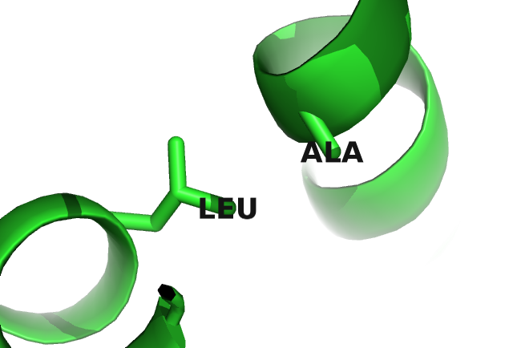
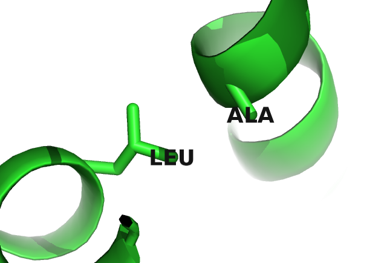

3.2 Physico-Chemical Fingerprints in Coupling Matrices
The correlation analysis of coupling matrices in the last section revealed that certain couplings are more indicative of a contact than others. Individual coupling matrices for a residue pair that is in physcial contact often display striking patterns that agree with the previous findings. These patterns allow a biological interpretation of the coupling values that reveal details of the physico-chemical interdependency between both residues.
Figure 3.3 visualizes the inferred coupling matrix and single potentials \(\vi\) and \(\vj\) for a residue pair \((i,j)\) computed with the pseudo-likelihood method. The single potentials \(\via\) and \(\vja\) describe the tendency for each amino acid \(a\) to appear at positions \(i\) and \(j\), and the couplings \(\wijab\) describe the tendency of amino acid \(a\) at position \(i\) to co-occur with amino acid \(b\) at position \(j\). A cluster of strong coupling values can be observed for the couplings between the charged residues glutamic acid (E), aspartic acid (D), lysine (K) and arginine (R) and the polar residue glutamine (Q). Positive coupling values arise between positively charged residues (K, R) and negatively charged residues (E, D), whereas couplings between equally charged residues have negative values. These exemplary couplings (E-R, E-K, K-D) perfectly reflect the interaction preference for residues forming salt bridges. Indeed, in the protein structure the first residue (E) forms a salt bridge with the second residue (R) as can be seen in the left plot in Figure 3.5.
Figure 3.3: Couplings \(\wijab\) and single potentials \(\via\) and \(\vja\) computed with pseudo-likelihood for residues 6 and 82 in protein chain 1a9x_A_05. The matrix shows the 20x20 couplings \(\wijab\) with color representing coupling strength and direction (red = positive coupling value, blue = negative coupling value) and diameter of bubbles representing absolute coupling value \(|\wijab|\). Bars at the x-axis and y-axis correspond to the Potts model single potentials \(\vi\) and \(\vj\) respectively. Color reflects the value of single potentials. Amino acids are abbreviated with one-letter code and they are broadly grouped with respect to physico-chemical properties listed in Appendix B.
Figure 3.4 visualizes the coupling matrix for a pair of hydrophobic residues. Hydrophobic pairings, such as alanine (A) - isoleucine (I), or glycine (G) - isoleucine (I) have strong coupling values but the couplings also reflect a sterical constraint. Alanine is a small hydrophobic residue and it is favoured at both residue positions: it has strong positive single potentials \(\vi(A)\) and \(\vj(A)\) and strong positive couplings with isoleucine (I), leucine (L) and methionine (M). But alanine is disfavoured to appear at both positions at the same time since the A-A coupling is negative. Figure 3.5 illustrates the location of the two residues in the protein core. Here, hydrophobic residues are densely packed and the limited space allows for only small hydrophobic residues.
Figure 3.4: Couplings \(\wijab\) and single potentials \(\via\) and \(\vja\) computed with pseudo-likelihood for residues 29 and 39 in protein chain 1ae9_A_00. The matrix shows the 20x20 couplings \(\wijab\) with color representing coupling strength and direction (red = positive coupling value, blue = negative coupling value) and diameter of bubbles representing absolute coupling value \(|\wijab|\). Bars at the x-axis and y-axis correspond to the Potts model single potentials \(\vi\) and \(\vj\) respectively. Color reflects the value of single potentials. Amino acids are abbreviated with one-letter code and they are broadly grouped with respect to physico-chemical properties listed in Appendix B.
 

Figure 3.5: Interactions between protein side chains. Left: residue 6 (E) forms a salt bridge with residue 82 (R) in protein chain 1a9x_A_05. Right: residue 29 (A) and residue 39 (L) within the hydrophobic core of protein chain 1ae9_A_00.
Many more biological interpretable signals can be identified from coupling matrices, including pi-cation interactions (see Figure 3.6), aromatic-proline interactions (see Figure 3.7), or disulphide bonds (see Figure 3.8).
Coucke and collegues performed a thorough quantitative analysis of coupling matrices selected from confidently predicted residue pairs [189]. They showed that eigenmodes obtained from a spectral analysis of averaged coupling matrices are closely related to physico-chemical properties of amino acid interactions, like electrostaticity, hydrophobicity, steric interactions or disulphide bonds. By looking at specific populations of residues, like buried and exposed residues or residues from specific protein classes (small, mainly \(\alpha\), etc), the eigenmodes of corresponding coupling matrices are found to capture very characteristic interactions for each class, e.g. rare disulfide contacts within small proteins and hydrophilic contacts between exposed residues. Their study confirms the qualitative observations presented above that amino acid interactions can leave characteristic physico-chemical fingerprints in coupling matrices.
Figure 3.6 shows a Tyrosine and a Lysine residue forming a cation-\(\pi\) interaction in protein 2ayd. The corresponding coupling matrix in figure ?? reflects the strong interaction preference.
![Tyrosine (residue 37) and Lysine (residue 48) forming a cation-\(\pi\) interaction in protein 2ayd. Coupling Matrix for residue pair i=37 and j=48 of PDB 2ayd chain A domain 1. Size of the bubbles represents coupling strength and color represents the direction of coupling: red = positive coupling, blue = negative coupling. Bars at the x-axis represent single potentials for residue i=37 and bars at the y-axis represent single potentials for residue j=48. Height of the bars represents potential strength and color represents positive (red) and negative (blue) values.](img/coupling_matrix_analysis/pi_cation_interaction_combined.png)
Figure 3.6: Tyrosine (residue 37) and Lysine (residue 48) forming a cation-\(\pi\) interaction in protein 2ayd. Coupling Matrix for residue pair i=37 and j=48 of PDB 2ayd chain A domain 1. Size of the bubbles represents coupling strength and color represents the direction of coupling: red = positive coupling, blue = negative coupling. Bars at the x-axis represent single potentials for residue i=37 and bars at the y-axis represent single potentials for residue j=48. Height of the bars represents potential strength and color represents positive (red) and negative (blue) values.
Figure 3.7 shows a proline and a tryptophan residue forming such a CH/\(\pi\) interaction in protein 1aol. The corresponding coupling matrix in figure ?? reflects this interaction with strong positive coupling between proline and tryptophan.
![Proline and tryptophan (residues 17 and 34) stacked on top of each otherengaging in a CH/\(\pi\) interaction in protein chain 1aol_A_00. Coupling Matrix for residue pair i=17 and j=34 of PDB 1aol chain A. Size of the bubbles represents coupling strength and color represents the direction of coupling: red = positive coupling, blue = negative coupling. Bars at the x-axis represent single potentials for residue i=17 and bars at the y-axis represent single potentials for residue j=34. Height of the bars represents potential strength and color represents positive (red) and negative (blue) values.](img/coupling_matrix_analysis/proline_aromatic_interaction_combined.png)
Figure 3.7: Proline and tryptophan (residues 17 and 34) stacked on top of each otherengaging in a CH/\(\pi\) interaction in protein chain 1aol_A_00. Coupling Matrix for residue pair i=17 and j=34 of PDB 1aol chain A. Size of the bubbles represents coupling strength and color represents the direction of coupling: red = positive coupling, blue = negative coupling. Bars at the x-axis represent single potentials for residue i=17 and bars at the y-axis represent single potentials for residue j=34. Height of the bars represents potential strength and color represents positive (red) and negative (blue) values.
Figure 3.8 shows two cysteine residues forming a covalent disulfide bond in protein 1alu. The corresponding coupling matrix in figure ?? reflects the strong interaction preference of cysteines.
![Two cystein residues (residues 54 and 64) forming a covalent disulfide bond in protein 1alu. Coupling Matrix for residue pair i=54 and j=64 of PDB 1alu chain A. Size of the bubbles represents coupling strength and color represents the direction of coupling: red = positive coupling, blue = negative coupling. Bars at the x-axis represent single potentials for residue i=54 and bars at the y-axis represent single potentials for residue j=64. Height of the bars represents potential strength and color represents positive (red) and negative (blue) values.](img/coupling_matrix_analysis/disulfide_interaction_combined.png)
Figure 3.8: Two cystein residues (residues 54 and 64) forming a covalent disulfide bond in protein 1alu. Coupling Matrix for residue pair i=54 and j=64 of PDB 1alu chain A. Size of the bubbles represents coupling strength and color represents the direction of coupling: red = positive coupling, blue = negative coupling. Bars at the x-axis represent single potentials for residue i=54 and bars at the y-axis represent single potentials for residue j=64. Height of the bars represents potential strength and color represents positive (red) and negative (blue) values.
References
189. Coucke, A., Uguzzoni, G., Oteri, F., Cocco, S., Monasson, R., and Weigt, M. (2016). Direct coevolutionary couplings reflect biophysical residue interactions in proteins. J. Chem. Phys. 145, 174102. Available at: http://scitation.aip.org/content/aip/journal/jcp/145/17/10.1063/1.4966156.